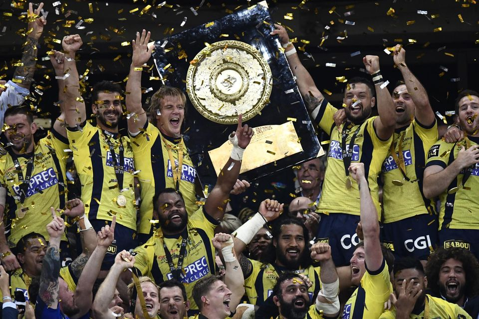
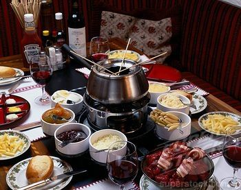

Mathieu Bouchant
Programmer graduated from Le Wagon #Batch201

After 3 years in financial markets, I got bored and went learn code @lewagon.
|  |
My favourite club is ASMAssociation Sportive Montferrandaise Clermont Auvergne is a French rugby union club from Clermont-Ferrand in Auvergne-Rhône-Alpes that currently competes in Top 14, the top level of the French league system. Clermont are two times French champions in 2009-10 and 2016-17. |
My favourite Movie is SignsSigns is a 2002 American science fiction thriller film written and directed by M. Night Shyamalan and executive produced by Shyamalan, Frank Marshall, Kathleen Kennedy and Sam Mercer. Its story focuses on a former Episcopal priest named Graham Hess, played by Mel Gibson, who discovers a series of crop circles in his cornfield. Hess slowly discovers that the phenomena is a result of extraterrestrial life. |
|
|  |
My favourite dishI love serving this fondue when I have friends coming over. It only takes a few minutes to prepare! I prepare the sauces in advance so that they can chill, then I cut the beef just before my guests arrive. I have more time with my guests and no spending hours in the kitchen! In addition, this meal is delicious and the sauces are really tasty. I serve this fondue with boiled potatoes. |